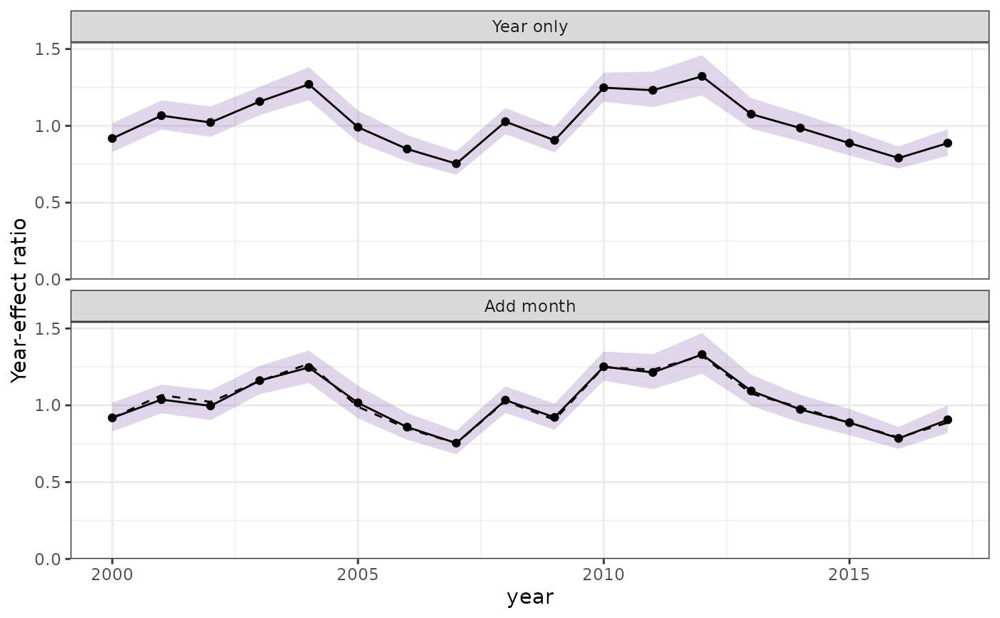

influ_steps() calculates and stores the indices needed for plot_step().
These are focus/year-effect contrasts, not area-integrated abundance indices.
Adding a spatial process changes the estimated year effects by refitting the
model; its field is not added to the plotted index.
Arguments
- fits
One supported fitted model, an
influ_diag, or an ordered list of fitted models or diagnostics. An existinginflu_stepsis also accepted.- year
Focus-variable name, inferred from the first input when omitted.
- steps
For refitting, an ordered, uniquely named list of cumulative formulas or lists of model-update arguments. Each specification updates the original model. Use
formulain an argument list for its formula change. If omitted, ordinary single-component models start with the focus term and progressively add the remaining formula terms. Offsets are retained. Spatial models require explicit steps so field changes are deliberate.- refit
Explicitly allow new model fitting. Defaults to
FALSE.- labels
Unique step labels. Defaults to list names or generated labels.
- component
Index component. Must be supplied if more than one is available, for example
"positive"or"unconditional_mean"in a hurdle model. Even a combined-component index remains a focus-effect contrast, not the full expected response integrated over space.- probs
Interval probabilities for newly calculated diagnostics. Existing diagnostics retain their original intervals.
- keep_fits
Retain fitted models in the result? Defaults to
FALSEto keep the returned object small. Save expensive fits separately if needed.- refit_args
Named arguments passed to the model update at every step, such as BRMS sampling controls. Stage-specific arguments take precedence. Execution-only controls (
seed,cores,refresh,silent, andverbose) do not by themselves force an otherwise unchanged original fit to rerun.- ...
Arguments passed to
influ()for fitted-model inputs, such asuncertainty = "none",weights, orreference_data. All steps use the same calculation arguments. Not used for model-fitting controls.- x, object
An `influ_steps` object.
Value
An influ_steps object with compact indices and steps tables,
focus, calculation metadata, and optional fits.
Details
Plotting a stored result never refits models. plot_step(model, refit = TRUE)
is an explicit shortcut that calculates a sequence and immediately plots it.
Automatic refitting is restricted to supported formula structures. Supply
explicit steps or already-fitted models when a structure cannot be updated
safely. Refits use the original analysis rows and report convergence problems.
Native update() methods are used where available. tinyVAST has no such
method, so its refits reconstruct the recorded fitting call with the locked
data, stored spatial domain, and requested process settings.
Each curve uses the centring and uncertainty supplied by influ(). No extra
plug-in rescaling is applied. With the same data and focus reference, all
steps use the same contrast definition. A change between steps depends on
the chosen order and is not a causal measure of variable importance.
Intervals describe each fitted model, not uncertainty in differences between
independently fitted models.
Supplied fits are checked for matching fitted response and focus rows where
those are recoverable. Precomputed diagnostics only permit checks of retained
response, focus-composition, reference, and index summaries; identical raw
data cannot be established from those summaries alone. Refitted stages receive
backend convergence checks. A stage marked supplied records an existing
input, not independent confirmation of its convergence; check that fit before
including it. Compact posterior fixtures may not retain convergence records.
Examples
data(lobsters_per_pot)
model <- glm(lobsters ~ year + month, family = poisson(),
data = lobsters_per_pot)
steps <- influ_steps(model, year = "year", refit = TRUE)
steps
#> <influ_steps>
#> Estimand: year-effect contrasts (not spatial abundance)
#> Focus: year
#> Steps: 2
#> Refitted: 1
#> step_id label backend status
#> 1 Year only glm refitted
#> 2 Add month glm reused original
plot_step(steps)
